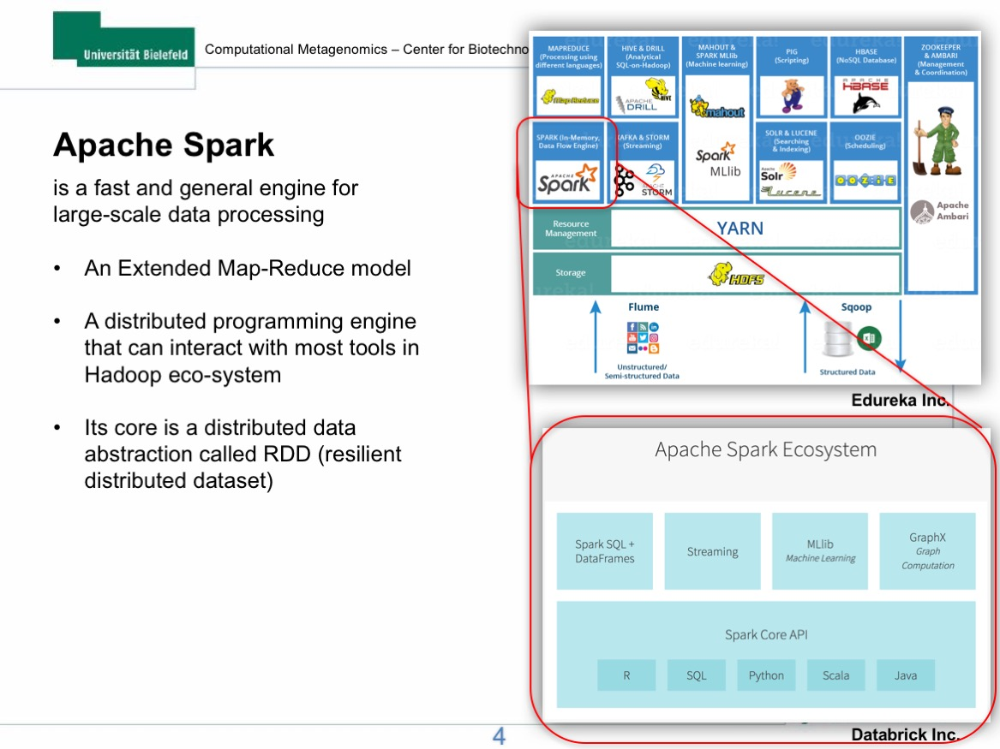
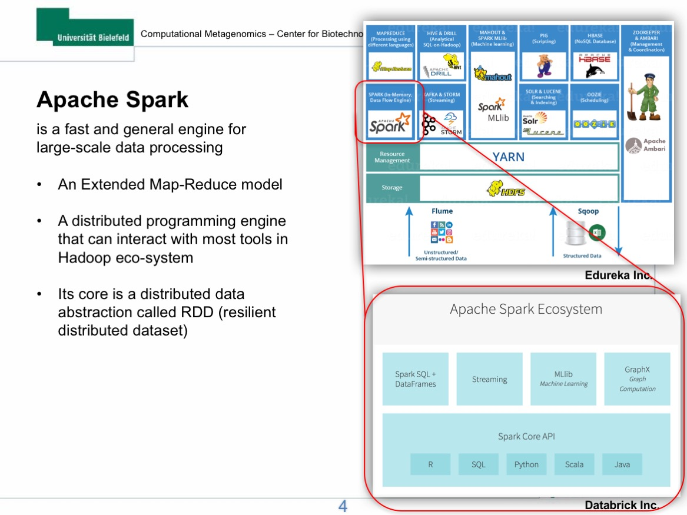
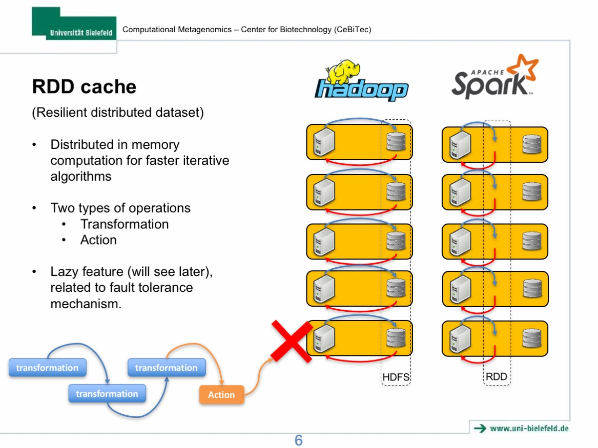
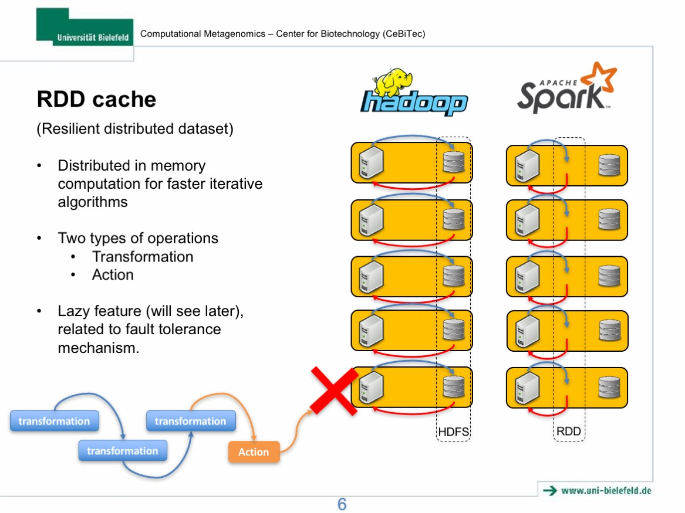
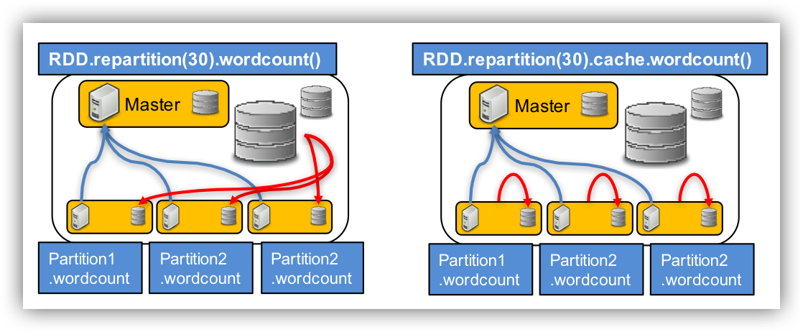

Abstract
In this lecture, I will firstly give a brief introduction to the new parallel computational framework, Apache Spark, and its applications in Biology. The introduction will be mainly focused on Spark`s new data sharing primitive called Resilient Distributed Dataset (RDD) and its advantages compared to the conventional Apache Hadoop platform. In the hands on section, we will deploy our own Spark clusters on the de.NBI cloud and analyse NGS data using Sparkhit, a bioinformatics framework builds on top of the Spark platform. The hands-on practice should facilitate your understanding to the architecture and the underlying mechanism of Spark.
Introductory slides
 

 



Hands-on overview and workflow
- Step 0: Download tools and datasets.
- Step 1: RDD loading and caching.
- Step 2: RDD repartitioning and distributing.
- Step 3: mapping metagenomic data using Sparkhit algorithm.
- Step 4: using Sparkhit to parallelize Docker tasks (bwa mapping).
- Step 5: summarize mapping results of the two mapping tools.
- Step 6: generate and visualize the mapping results.
Download tools and dataset from SWIFT
-
Create a working directory at :
/vol/spool, with command:
mkdir /vol/spool/sparkhit.
"/vol/spool" is a NFS volume shared between all slaves. -
Change to "/vol/spool/sparkhit" directory with command:
cd /vol/spool/sparkhit
-
Download tools and dataset from SWIFT with command:
wget https://s3.computational.bio.uni-giessen.de/swift/v1/sparkhitTool/sparkhitSummer.tar.gz
Or, using SWIFT download command:
swift download sparkhitTool sparkhitSummer.tar.gz -
Decompress the downloaded package with command:
tar zxvf sparkhitSummer.tar.gz
Directory tree: all file locations
/vol/spool/sparkhit
├── script
│ ├── 00.spark-shell.sh
│ ├── 01.mapping.sh
│ ├── 02.mapping_docker.sh
│ ├── 03.report_ear.sh
│ ├── 04.report_stool.sh
│ ├── 05.plot.krona.sh
│ ├── 06.view.sh
│ └── docker.sh
├── software
│ ├── KronaTools-2.7
│ └── sparkhit-latest
├── dataset
│ ├── ear
│ ├── reference.fa
│ ├── reference.fa.amb
│ ├── reference.fa.ann
│ ├── reference.fa.bwt
│ ├── reference.fa.pac
│ ├── reference.fa.sa
│ ├── SRS018978.fastq.gz
│ └── stool
Preparation:
Public Master IP
The public Master node`s ip address can be used to access the Spark webUI.
Type in:
host myip.opendns.com resolver1.opendns.com
Using domain server: Name: resolver1.opendns.com Address: 208.67.222.222#53 Aliases: myip.opendns.com has address 134.176.27.181 Host myip.opendns.com not found: 3(NXDOMAIN) Host myip.opendns.com not found: 3(NXDOMAIN)
To list your public IP address.
Or check your openstack UI at Project / Network / Routers / sparkhitrouter

Use the master ip to browse the Spark webUI to monitor the cluster and submitted jobs:
http://134.176.27.181/spark/

Private Master IP
You are gona need your private master ip to submit your Spark jobs.
Type in:
ifconfig
docker0 Link encap:Ethernet HWaddr 02:42:5a:04:83:25
inet addr:172.17.0.1 Bcast:0.0.0.0 Mask:255.255.0.0
UP BROADCAST MULTICAST MTU:1500 Metric:1
RX packets:0 errors:0 dropped:0 overruns:0 frame:0
TX packets:0 errors:0 dropped:0 overruns:0 carrier:0
collisions:0 txqueuelen:0
RX bytes:0 (0.0 B) TX bytes:0 (0.0 B)
eth0 Link encap:Ethernet HWaddr fa:16:3e:b5:a1:a3
inet addr:192.168.0.4 Bcast:192.168.0.255 Mask:255.255.255.0
inet6 addr: fe80::f816:3eff:feb5:a1a3/64 Scope:Link
UP BROADCAST RUNNING MULTICAST MTU:1450 Metric:1
RX packets:1700393 errors:0 dropped:0 overruns:0 frame:0
TX packets:1590152 errors:0 dropped:0 overruns:0 carrier:0
collisions:0 txqueuelen:1000
RX bytes:3882456204 (3.8 GB) TX bytes:11170161352 (11.1 GB)
lo Link encap:Local Loopback
inet addr:127.0.0.1 Mask:255.0.0.0
inet6 addr: ::1/128 Scope:Host
UP LOOPBACK RUNNING MTU:65536 Metric:1
RX packets:151909 errors:0 dropped:0 overruns:0 frame:0
TX packets:151909 errors:0 dropped:0 overruns:0 carrier:0
collisions:0 txqueuelen:0
RX bytes:60357490 (60.3 MB) TX bytes:60357490 (60.3 MB)
Programming in Spark-shell:
Step 1: RDD loading and caching
Switch to /vol/spool/sparkhit/script directory with command:
cd /vol/spool/sparkhit/script
as working directory. You should be able to see a script 00.spark-shell.sh. Print the script by:
cat 00.spark-shell.sh
These are interactive console commands, please do not run them directly.
spark-shell --driver-memory 30G --executor-memory 30G --executor-cores 30
val fastqRDD =sc.textFile("/vol/spool/sparkhit/dataset/SRS018978.fastq.gz")
# RDD cache function
fastqRDD.cache() # cache data into memroy, but since RDD is "lazy". Nothing actually happens
val a = fastqRDD.count() # here "cache" step is now running, thus this step takes more time
val a = fastqRDD.count()
fastqRDD.unpersist()
val a = fastqRDD.count()
fastqRDD.cache()
val a = fastqRDD.count()
val a = fastqRDD.count()
There should be a run time difference between the cache RDD and the uncache RDD

Step 2: RDD repartitioning and distributing
Lets say you wanna write a program that counts all the lines with more than 4 "N" in the
cat 00.spark-shell.sh
# RDD data distribution
val reparRDD = fastqRDD.repartition(30) # distributing data
reparRDD.cache()
reparRDD.count()
reparRDD.filter(line => line.contains("NNNN")).count()
fastqRDD.filter(line => line.contains("NNNN")).count()
reparRDD.filter(line => line.contains("NNNN")).count()
fastqRDD.filter(line => line.contains("NNNN")).count()
reparRDD.saveAsTextFile("./repartitionFastq")
fastqRDD.saveAsTextFile("./oneFastq")
There should be a run time difference between the partitioned RDD and the unpartitioned RDD

Use CTRL + D to quit.
Processing NGS data with Sparkhit:
Step 3: mapping metagenomic data using Sparkhit algorithm
cat 01.mapping.sh
/vol/spool/sparkhit/software/sparkhit-latest/bin/sparkhit mapper \ --master spark://192.168.0.9:7077 \ <----- change IP address. With command: ifconfig --driver-memory 15G \ --executor-memory 20G \ -fastq "/vol/spool/sparkhit/dataset/ear/SRS*bz2" \ -reference /vol/spool/sparkhit/dataset/reference.fa \ -outfile ./01.ear_result \ -kmer 12

Step 4: using Sparkhit to parallelize Docker tasks (e.g. bwa)
docker run lh3lh3/bwa
Unable to find image 'lh3lh3/bwa:latest' locally
latest: Pulling from lh3lh3/bwa
d56ac91634e2: Pull complete
a3ed95caeb02: Pull complete
Digest: sha256:ecb80258bdaebe4d42445eb34adea936c929b3a3439bea154a128939f7cce95d
Status: Downloaded newer image for lh3lh3/bwa:latest
Program: bwa (alignment via Burrows-Wheeler transformation)
Version: 0.7.12-r1044
Contact: Heng Li <lh3@sanger.ac.uk>
Usage: bwa <command> [options]
Command: index index sequences in the FASTA format
mem BWA-MEM algorithm
fastmap identify super-maximal exact matches
pemerge merge overlapping paired ends (EXPERIMENTAL)
aln gapped/ungapped alignment
samse generate alignment (single ended)
sampe generate alignment (paired ended)
bwasw BWA-SW for long queries
shm manage indices in shared memory
fa2pac convert FASTA to PAC format
pac2bwt generate BWT from PAC
pac2bwtgen alternative algorithm for generating BWT
bwtupdate update .bwt to the new format
bwt2sa generate SA from BWT and Occ
Note: To use BWA, you need to first index the genome with `bwa index'.
There are three alignment algorithms in BWA: `mem', `bwasw', and
`aln/samse/sampe'. If you are not sure which to use, try `bwa mem'
first. Please `man ./bwa.1' for the manual.
cat 02.mapping_docker.sh
/vol/spool/sparkhit/software/sparkhit-latest/bin/sparkhit piper \ --master spark://192.168.0.9:7077 \ <----- change IP address. With command: ifconfig --driver-memory 60G \ --executor-memory 30G \ -fastq "/vol/spool/sparkhit/dataset/stool/SRS*.tar.bz2" \ -filter \ -outfile ./02.stool_result \ -tool "sh /vol/spool/sparkhit/script/docker.sh"
cat docker.sh
docker run -iv /vol/spool/sparkhit/dataset:/tmp -w /tmp --rm \
lh3lh3/bwa \
mem reference.fa /dev/stdin \
| perl -ne 'my $seq = $_;next if $seq=~/^\@/; my @a=split /\t/,$seq; next if $a[2] eq "\*";print "$seq"'

Step 5: summarize mapping results of the two mapping tools
Sparkhit reporter summerizes tabular files by columns, for instance:
Use command: less ./01.ear_result/part-00000
to view the mapping result.
@HWI-EAS324_102408434:3:100:10079:21137/2 91nt 4.26e-31 88 4 91 + 89.01 NC_000913.3 2726600 2726687 @HWI-EAS324_102408434:3:100:10079:21137/2 91nt 2.30e-29 88 4 91 + 87.91 NC_000913.3 3424199 3424286 @HWI-EAS324_102408434:3:100:10079:21137/2 91nt 4.26e-31 88 1 88 - 89.01 NC_000913.3 228256 228343 @HWI-EAS324_102408434:3:100:10079:21137/2 91nt 4.26e-31 88 1 88 - 89.01 NC_000913.3 4040017 4040104 @HWI-EAS324_102408434:3:100:10079:21137/2 91nt 4.26e-31 88 1 88 - 89.01 NC_000913.3 4171138 4171225 @HWI-EAS324_102408434:3:100:10079:21137/2 91nt 4.26e-31 88 1 88 - 89.01 NC_000913.3 4212540 4212627 @HWI-EAS324_102408434:3:100:10079:21137/2 91nt 2.30e-29 88 1 88 - 87.91 NC_000913.3 3946201 3946288 @HWI-EAS324_102408434:3:100:10083:8631/2 100nt 4.08e-24 88 9 96 + 77.00 NC_000913.3 224064 224151 @HWI-EAS324_102408434:3:100:10083:8631/2 100nt 4.08e-24 88 9 96 + 77.00 NC_000913.3 3942101 3942188 @HWI-EAS324_102408434:3:100:10083:8631/2 100nt 4.08e-24 88 9 96 + 77.00 NC_000913.3 4035824 4035911 @HWI-EAS324_102408434:3:100:10083:8631/2 100nt 4.08e-24 88 9 96 + 77.00 NC_000913.3 4166952 4167039
cat 03.report_ear.sh
/vol/spool/sparkhit/software/sparkhit-latest/bin/sparkhit reporter \ -input "./01.ear_result/part*" \ -word 9 \ -outfile ./ear.report.txt
cat 04.report_stool.sh
/vol/spool/sparkhit/software/sparkhit-latest/bin/sparkhit reporter \ --driver-memory 60G \ --executor-memory 30G \ -input "./02.stool_result/part*" \ -word 3 \ -outfile ./stool.report.txt
Step 6: generate and visualize the mapping results
cat 05.plot.krona.sh
/vol/spool/sparkhit/software/KronaTools-2.7/bin/ktImportText -o HMP.krona.html ear.report.txt stool.report.txt
cat 06.view.sh
cp HMP.krona.html /vol/spool/www/index.html
After generating the Krona plot, go to http://134.176.27.181/result/ to see the results.
Remember to change the IP address to your own IP.
Ear sample should have more reads than the Stool sample, as Sparkhit recruiter is more sensitive.